Integración de preguntas multiparte y listas desplegables
El ejemplo de la sección previa es un primer acercamiento a una demostración por inducción pero, por supuesto, es deseable que el alumno pase de observar y comprender la estructura de la misma a resolver ejercicios de este tipo gradualmente por sí mismo. En este sentido resulta fundamental agregar preguntas al cuerpo de la demostración, a efecto de que el estudiante pueda autoevaluar su comprensión y progreso.
Supongamos que ahora deseamos que el alumno demuestre que \[\sum_{k=1}^{n}k^{2}=\frac{n(n+1)(2n+1)}{6}.\] Crearemos una pregunta STACK con lo siguiente en Variables de la pregunta:
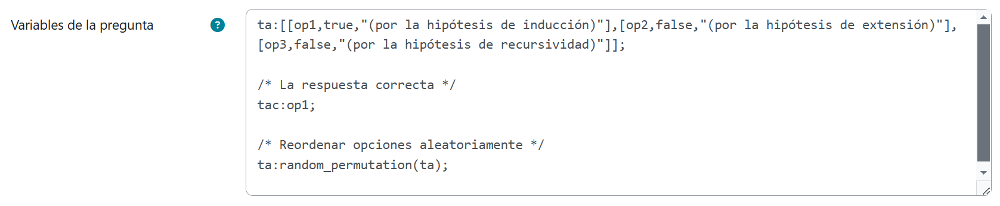
Lo anterior porque, en el tercer paso de la demostración, pretendemos colocar una lista desplegable aleatorizada cuya opción correcta es op1.
Ahora, en el Enunciado de la pregunta, habilitaremos la Vista del editor HTML y capturaremos el siguiente código, intercalando cinco inputs como se muestra, con sus correspondientes validaciones y retroalimentaciones:
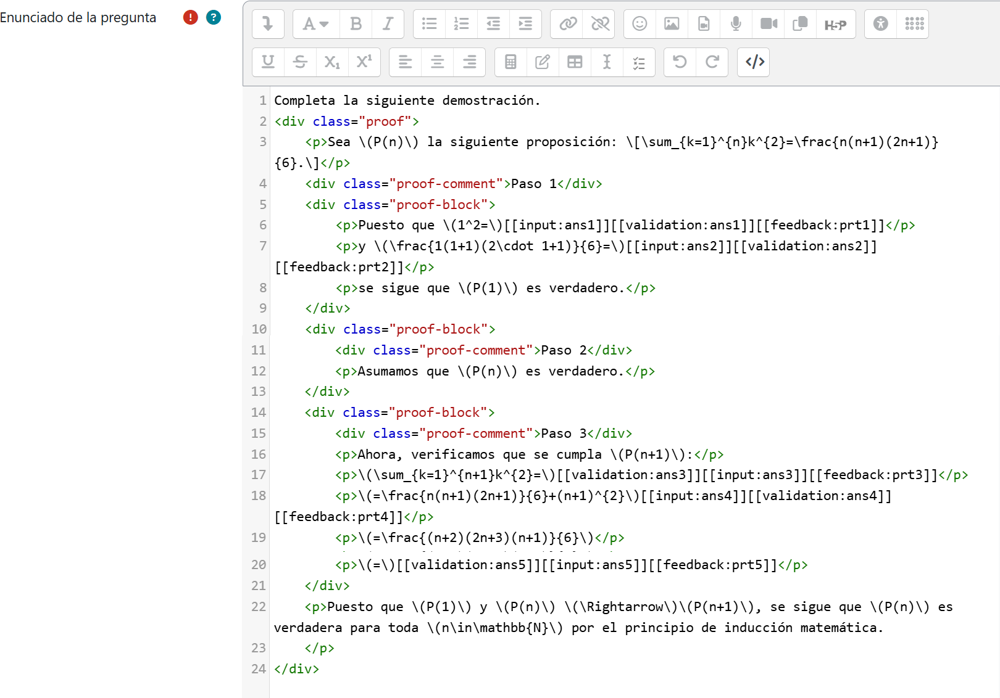
Para agilizar esta labor, descarga el código completo disponible al final de esta sección.
Como antes hemos aleatorizado la lista desplegable, no debemos olvidar capturar en las Notas de la pregunta el siguiente CasText para saber en su momento qué versiones del reactivo le han tocado a nuestros alumnos.
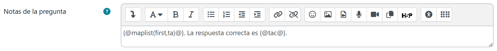
Las primeras dos entradas, ans1 y ans2, son valores numéricos en el paso 1 de la demostración (verificar el caso base \(n=1\)), por lo que en ambos casos se harán estas selecciones y capturas:
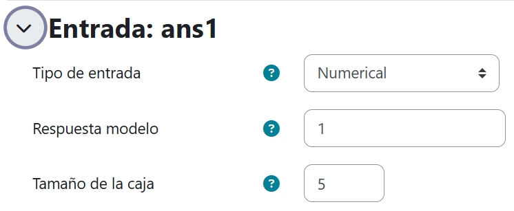
Y también en ambos casos se prohibirá el uso de números en forma flotante:
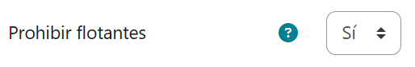
La entrada ans3 en cambio, será de tipo algebraica y en ella el estudiante deberá descomponer la suma de los primeros \(n+1\) números naturales elevados al cuadrado en la suma de los primeros \(n\) números naturales elevados al cuadrado más el sumando \((n+1)^2\). Notemos que conviene presentarle al alumno una sugerencia de sintaxis para escribir esto (con ? le indicamos las partes que debe completar en el comando sum(?,k,1,n)+? ). De manera que las capturas quedarán del siguiente modo para esta entrada que se ubica en el paso 3 de la demostración al igual que las restantes:
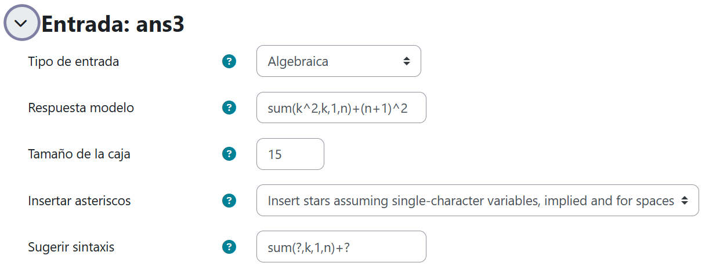
La entrada ans4, provendrá de la lista desplegable que definimos al inicio:
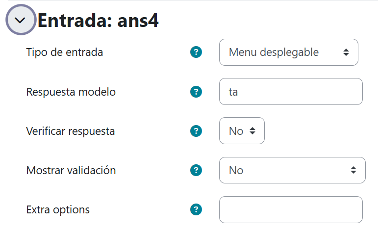
Y la entrada ans5 será la línea final del desarrollo, que corresponde a la proposición inicial pero en términos de \(n+1\), es decir, la respuesta modelo será ((n+1)*(n+2)*(2*(n+1)+1))/6:
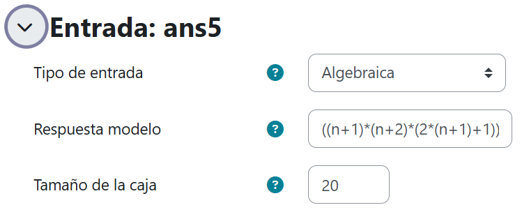
Hecho esto, comenzaremos a hacer las siguientes configuraciones en los árboles de respuestas potenciales de cada entrada.
Los árboles de las entradas ans1 y ans2 tendrán básicamente la misma configuración, salvo por la captura en SAns:
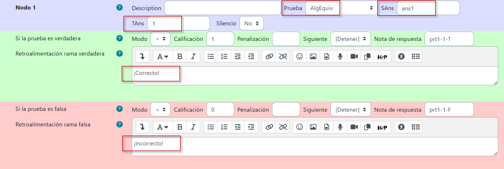
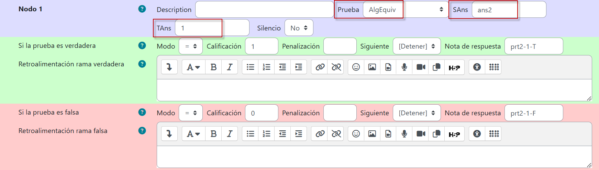
El árbol de la entrada ans3 tendrá dos nodos: en el Nodo 1 se verificará que la respuesta del estudiante sea estrictamente igual con \(\sum_{k=1}^{n}k^2+(n+1)^2\); de no ser así, desde el Nodo 2 se advertirá que la respuesta no está dada en función de \(n+1\) en caso de satisfacerse la equivalencia algebraica.
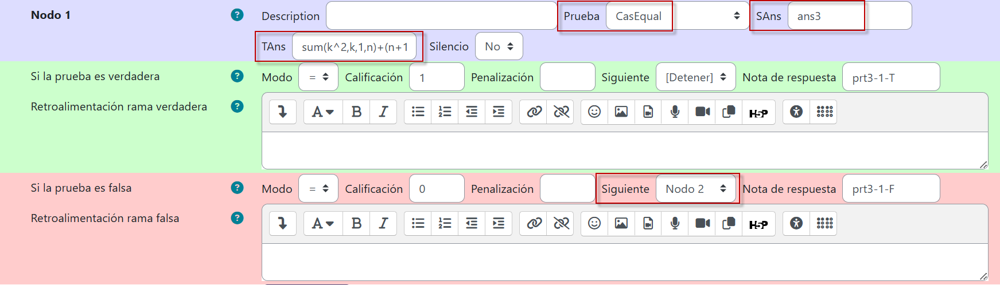
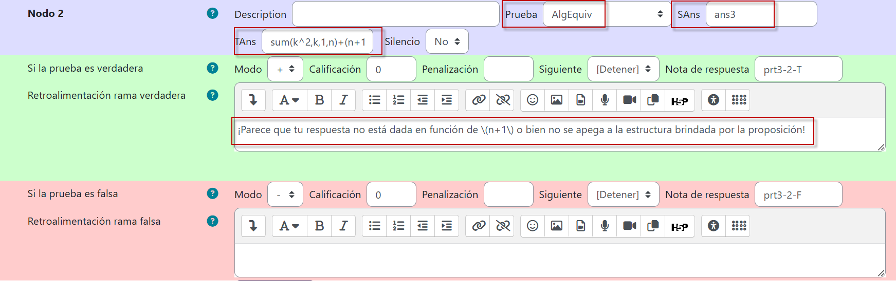
El árbol de ans4 es el que corresponde a la lista desplegable, cuya respuesta correcta ya habíamos señalado es op1:
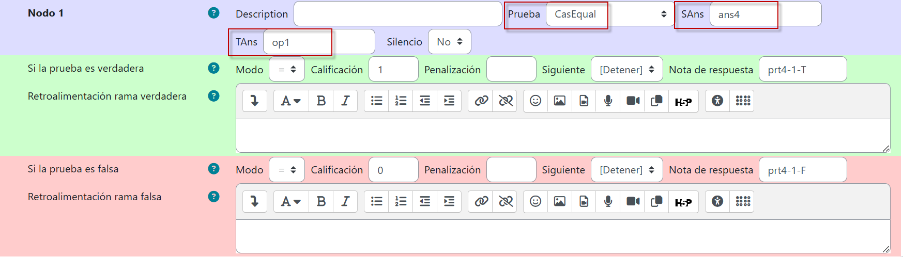
Por último, en el árbol de la entrada ans5, tendremos dos filtros: en el Nodo 1 nos aseguramemos que la respuesta del estudiante sea estrictamente igual con \(\frac{(n+1)*(n+2)*(2*(n+1)+1)}{6}\); de no ser así, desde el Nodo 2 advertiremos que se ha presentado la respuesta en forma algebraicamente equivalente, de ser el caso.
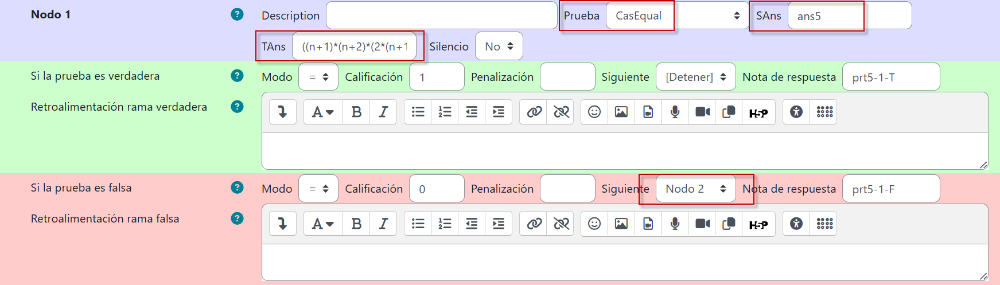
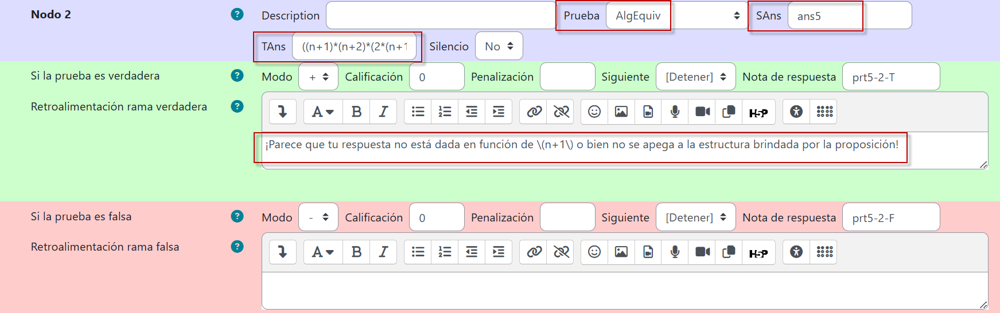
Luego de guardar los cambios, la pregunta deberá previsualizarse así:
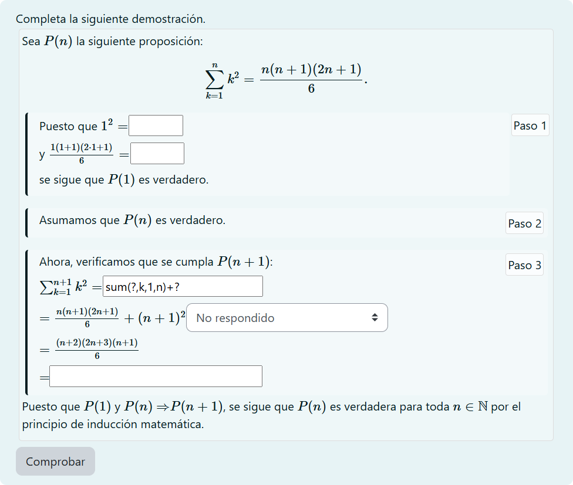